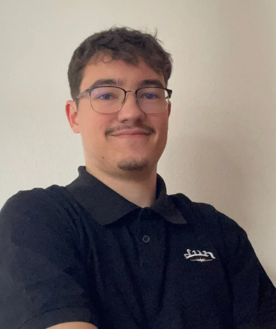
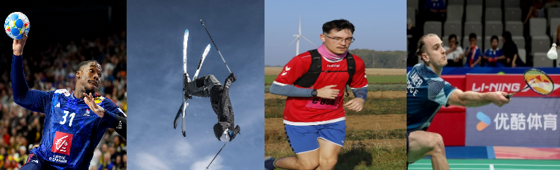
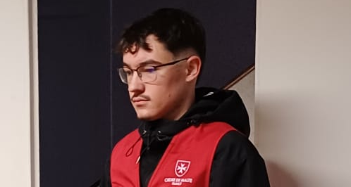

École d'Ingénieurs
2025 - 2028 | EiJV (École d'Ingénieurs Jules Verne) - Amiens (80000)
Spécialité CyberSécurité

Étudiant en première année d'école d'ingénieur en cybersécurité au sein de l'EiJV (École d'Ingénieurs Jules Verne) à Amiens, j'ai choisi de poursuivre mes études après l'obtention de mon BUT pour approfondir mes connaissances en réseaux, cybersécurité et management d'équipe.
Je suis actuellement à la recherche d'une alternance de deux ans pour la rentrée de septembre 2026. Au cours de mon parcours, j'ai déjà réalisé des stages ainsi qu'une année en alternance, ce qui m'a permis d'acquérir une première expérience professionnelle.
Me contacter2025 - 2028 | EiJV (École d'Ingénieurs Jules Verne) - Amiens (80000)
Spécialité CyberSécurité
2022 - 2025 | IUT Nord Franche Comté - Montbéliard (25200)
Spécialité Internet des Objets et Mobilités (IOM)
Juillet 2024 - Juin 2025
Avril 2024 - Juin 2024

Je suis un grand fan de sports de tous types, mais en particulier de handball, de badminton, de course à pied et de ski.

Je participe souvent à des maraudes solidaires à Amiens le dimanche.